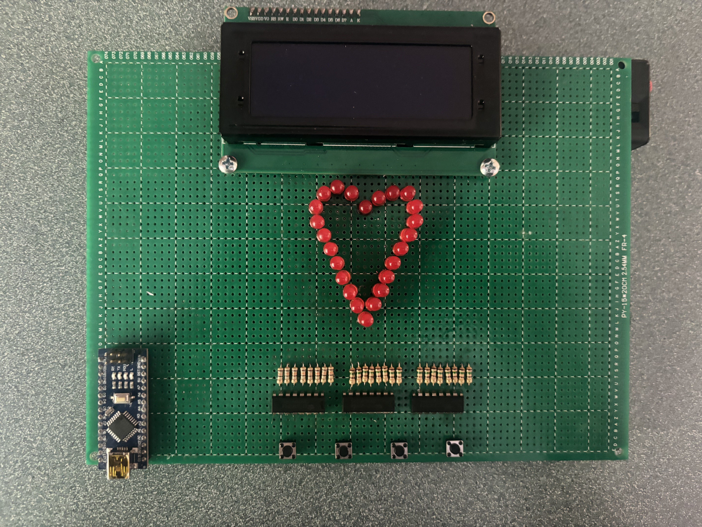
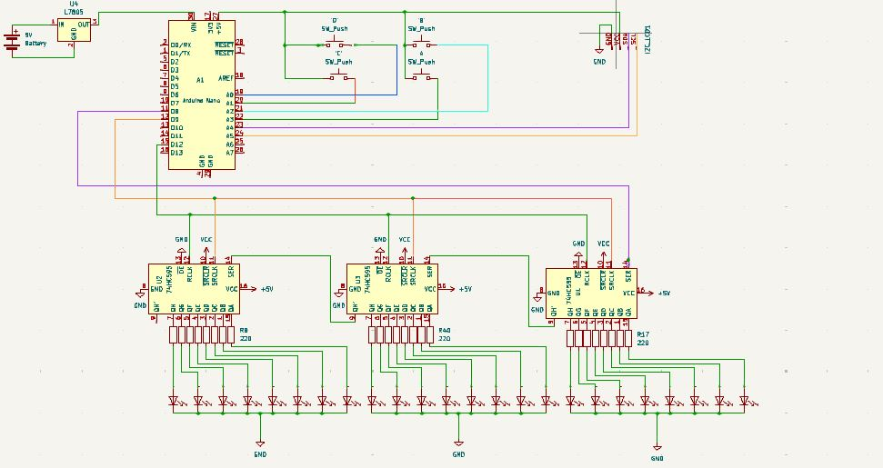
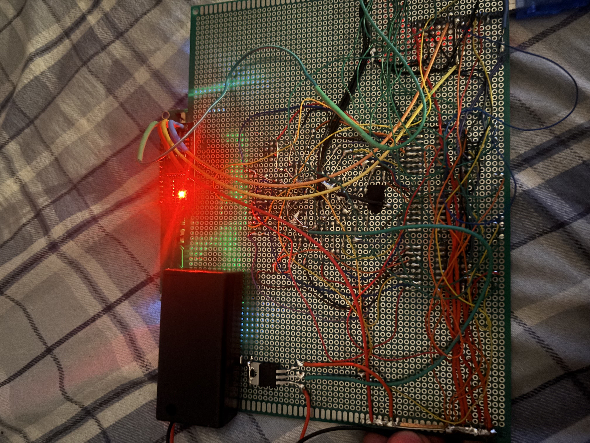
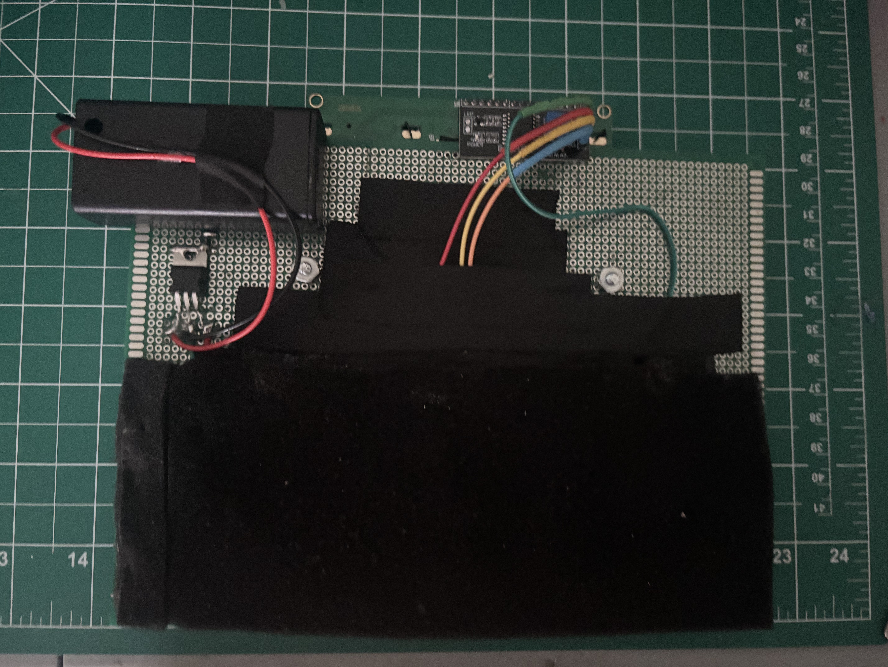
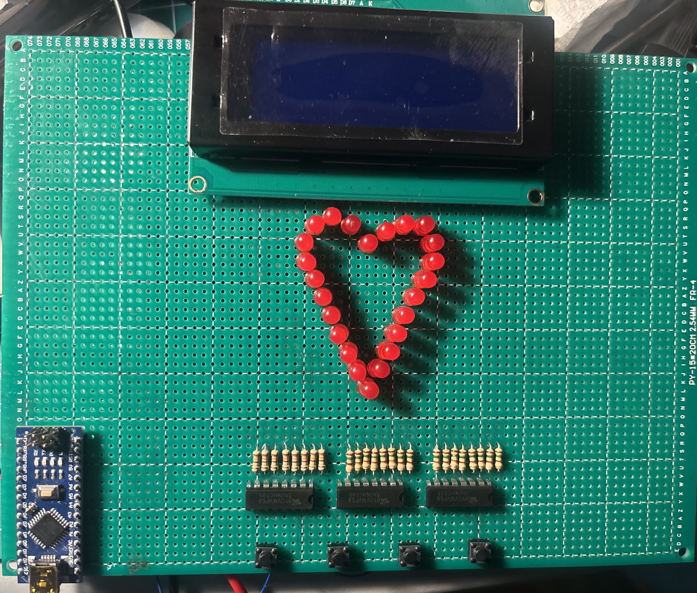

The first step was to create a schematic to remain organized while building the circuit, due to the large amount of connections needed in such a small space.

I first built the shift register circuit on a breadboard using multiple different colored LEDs I was considering using for the final product. I experimented with executing different patterns so that, once I built the lights into a heart shape, I could create an animation that is aesthetically appealing.
With my design verified, I could now begin transferring the circuit to a perfboard. I carefully used 30 AWG wire to make all the connections for the LED portion of the circuit and then 24 AWG for my powers, grounds, and I²C connections. Then I added a 9V battery socket and powered it up to make sure everything functioned correctly. Once I confirmed this, I sealed all the connections with UV resin and covered them with foam so the board could be held comfortably.



With all my connections made, it was time to create the code for the trivia quiz and integrate the LED animation to be triggered upon completion of the game. I first created a generic version with plans to go back and personalize it at the very end of the process. View inline below or download quiz_game.txt.
[... your code remains unchanged ...]Here is the generic version of the quiz played all the way through. This project was a huge challenge and learning experience on multiple levels. I had to use many resources to fill in the gaps within my programming knowledge to achieve the end product I wanted. My soldering skills were certainly tested and it took quite a bit of effort to come up with a strategy to correctly wire up so many connections right on top of each other. I was able to push through to create the final product I envisioned and create a great gift for my girlfriend!